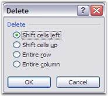
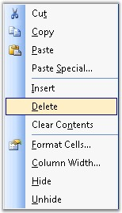

It is often necessary to delete unwanted cells, rows and columns in a spreadsheet, when you want to manipulate cells. MS Excel provides various options to delete cells, rows and columns. You can delete a cell by right-clicking on it, and selecting the Delete option from the context menu. On selecting the Delete option, the Delete dialog box prompts for an option to be selected as shown in the following screen shot.

Figure 59: Delete Dialog Box in Excel
To delete a cell in XlsIO, you can make use of the Clear method. Following code example demonstrates this.
|
[C#]
// Shifts cell left after deletion. mySheet.Range["A1:E1"].Clear(ExcelMoveDirection.MoveLeft);
// Shifts cell up after deletion. mySheet.Range["A1:A6"].Clear(ExcelMoveDirection.MoveUp); |
|
[VB.NET]
' Shifts cell left after deletion. mySheet.Range("A1:E1").Clear(ExcelMoveDirection.MoveLeft)
' Shifts cell up after deletion. mySheet.Range("A1:A6").Clear(ExcelMoveDirection.MoveUp) |
Delete Rows and Columns
MS Excel allows to delete rows and columns in a spreadsheet, by selecting and deleting the rows, through the context menu that appears on right-clicking.

Figure 60: Context menu on right-clicking the cell
Deleting a row, will move the below rows one step up and deleting a column, will move the columns to the right, one step to the left respectively.
XlsIO allows deleting rows and columns by using the IWorksheet.DeleteRow and IWorksheet.DeleteColumn methods. Following code example illustrates how to delete rows and columns.
|
[C#]
// Deleting Row. sheet.DeleteRow(3);
// Deleting Column. sheet.DeleteColumn(2); |
|
[VB.NET]
' Deleting Rows. sheet.DeleteRow(3)
' Deleting Columns. sheet.DeleteColumn(2) |
You can also delete multiple rows as follows.
|
[C#]
// Deleting Rows. sheet.DeleteRow(startRow, NoOfRows);
// Deleting Columns. sheet.DeleteColumn(startColumn, NoOfColumn); |
|
[VB.NET]
' Deleting Rows. sheet.DeleteRow(startRow, NoOfRows)
' Deleting Columns. sheet.DeleteColumn(startColumn, NoOfColumn) |
 Note: Deletion by
using above method is more efficient than looping.
Note: Deletion by
using above method is more efficient than looping.
Note: Row/Column index
of these methods are "one based".